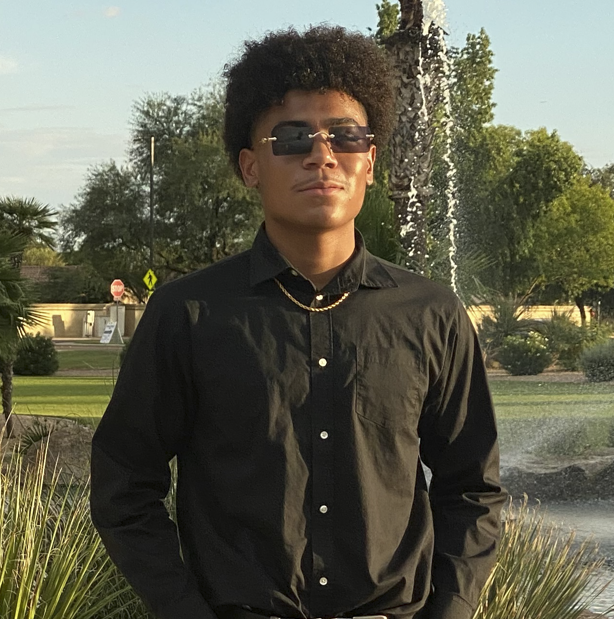

English

Hola, mi nombre es Deven Lejander.Jr y soy un aspirante a Desarrollador Web.
Más sobre mí
Nombre: Deven LeJander Jr.
Edad: 17 años
Aspirante a desarrollador web de Phoenix, Arizona
Actualmente asistiendo a la escuela técnica West-Mec para adquirir habilidades en el campo de la tecnología y el desarrollo web
Interés en la tecnología e Internet desde la infancia
La pasión por el desarrollo web se intensificó a medida que fui creciendo, deseando perseguirlo como carrera
Equilibrando un trabajo a tiempo parcial y la escuela secundaria, pero decidido a hacerlo funcionar
Trabajando constantemente en proyectos personales y construyendo un portafolio
Siempre buscando formas de mejorar y mantenerse actualizado con las últimas tendencias y tecnologías en el desarrollo web
El objetivo final es convertirse en un exitoso desarrollador web y generar un impacto positivo en la industria
Cree que el trabajo duro, la dedicación y la pasión por el aprendizaje pueden hacer posible cualquier cosa.
Mis proyectos
Mi Currículum Vitae